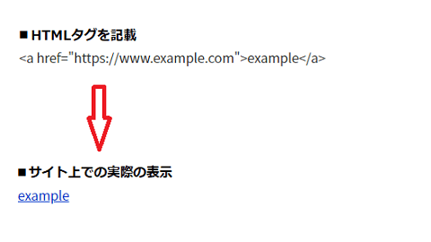
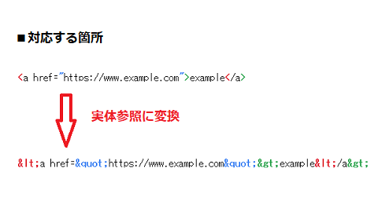
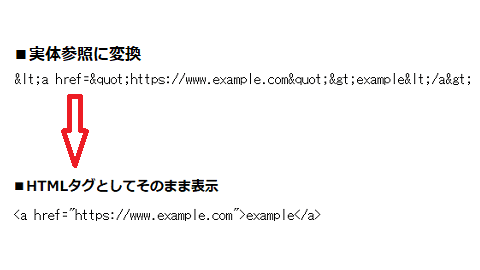
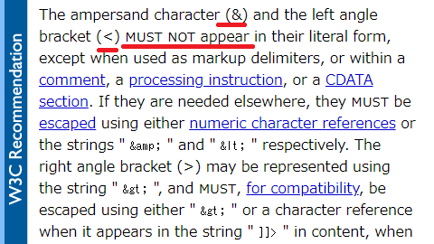
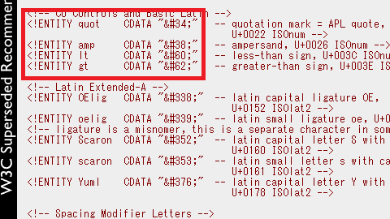
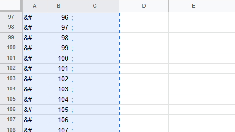
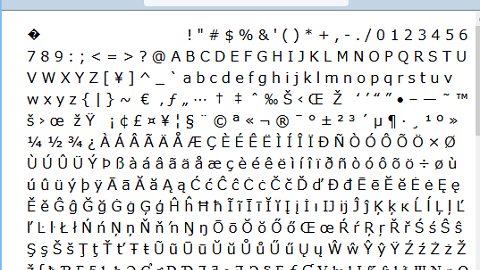
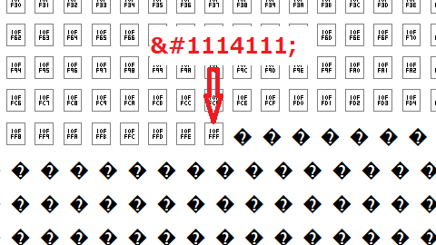
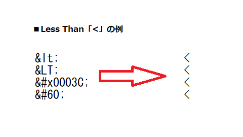

実体参照でHTMLタグをそのまま表示
HTMLタグをサイト上でそのまま表示する際、「<」や「>」などはそれ自体がHTMLタグを構成する特殊文字のため、これらを実体参照に変換してエスケープする必要があります。
特殊文字には@や©マークなど無数にありますが、HTMLの表示に影響する文字は主に「&」、「<」、「>」、「"」の４文字です。
例えば、リンクのHTMLタグをそのまま記載したとしても、ブラウザはそれをHTMLと解釈してリンクを表示してしまうため、ソースコードをそのまま表示することができません。

この場合、「<」や「>」、「"」などの特殊文字を実体参照の「<」や「>」、「"」に変換します。

この「<」や「>」などは実体参照と呼ばれますが、このようにHTMLタグとしての機能を無効にした上で記載すれば、サイト上ではソースコードがそのままの状態で表示されます。

特殊文字は無数にありますが、W3Cによると変換すべき文字は「&」や「<」とのことです。
→ 2.4 Character Data and Markup

この「&」があれば、実体参照の先頭部分と解釈してしまいますし、「<」があれば、それに続く部分がHTMLタグと解釈してしまうため、最低限、これらは変換しておく必要があります。
上記の例についても、最低限、「<」を「<」に変換するだけでもHTMLタグがそのまま表示されますが、できるだけ「>」や「"」も変換しておくことをおすすめします。
- 「&」→「&」
- 「<」→「<」
- 「>」→「>」
- 「"」→「"」
加えて、サイト内で「"」ではなく「'」を使用している場合、「'」についても「'」に変換しておいた方がよいと思います。これらの特殊文字を変換する際、CMSなどで入力すれば、たいていは自動で変換されるはずです。
実体参照とは？数値文字参照との違い
この実体参照（entity reference）は、実体（entity、エンティティ）の参照という意味ですが、例えば、W3Cのこちらのページには、以下のようなエンティティがあります。

この場合、エンティティ名が「quot」で定義されたエンティティを実体参照である「&エンティティ名;」の「"」で参照すると、数値文字参照の「"」で「"」が表示されます。
この「"」の数値以外も調べる際、エクセルなどで番号を並べてコピペすれば、簡単にチェックすることができます。

これらをHTMLに貼り付けると実際の文字が表示されますが、アルファベットや数字などはあえて名前を付ける必要がありませんし、膨大な数があります。

今のところ18万文字あたりまでは表示されましたが、スペース的にはまで111万文字分程度はあるものの、そのほとんどは空でまだ何も割り当てられてませんでした。

そのため、そのほとんどは名前と数値のエンティティのセットがされていなく、そのような名無しの文字は実体参照ではなく、数値文字参照で表示するしかありません。
上記のような「quot」などのような名前がある場合は「&エンティティ名;」での実体参照の方が使いやすいと思いますが、いずれの場合でも同じように表示されます。
例えば、小なりかっこのLess Thanの「<」については、エンティティ名「lt」の「<」、「<」のほか、数値文字での「<」、「<」、あるいは「<」で指定しても同じように表示されます。

当サイト運営者の作成ソフトの場合、大文字の「<」については認識されませんでしたが、環境によっては表示されないケースもあるかもしれません。このうち、おすすめはless thanを小文字のltで省略した「<」ですが、数値よりも名前の方が分かりやすくて使いやすいと思います。
同様に、「>」の大なりはGreater Thanの「>」、「"」はQuotation Markの「"」、「&」はAmpersand（アンパサンド）の「&」になりますが、HTMLでソースコードをそのまま表示する際にはこれらの特殊文字を実体参照に変換することをおすすめします。